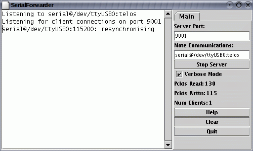

To goal of this lesson is to show you how to communicate with a mote from a PC. This will allow you to collect data from the network, send commands to motes, and monitor network traffic.
This tutorial presents the Java-based infrastructure for communicating
with motes. There is also a C-based infrastructure, found in support/sdk/c.
Please see the documentation found there, and the mig and
ncg man pages for more details.
The first step is to check that you are able to get your PC to communicate with a mote. Most motes have a serial port or similar interface. For example, the mica family can directly control a serial port: programming boards basically connect the mote's serial port pins to the actual serial port on the board. Telos motes also have a serial interface, but it talks to their USB hardware, which is similar in functionality but very different in terms of cables and connectors.
The basic abstraction for mote-PC communication is a packet
source. A packet source is exactly that: a communication medium
over which an application can receive packets from and send packets to
a mote. Examples of packet sources include serial ports, TCP sockets,
and the SerialForwarder tool. Most TinyOS communication tools take
an optional -comm parameter, which allows you to
specify the packet source as a string. For example:
$ java net.tinyos.tools.Listen -comm serial@COM1:telos
tells the Listen tool to use the COM1 serial port (on a Windows machine) at the correct speed for a telos mote, while
$ java net.tinyos.tools.Listen -comm serial@/dev/ttyS0:micaz
tells Listen to use the serial port /dev/ttyS0 (on
a UNIX machine) at the correct speed for a micaz mote.
The first step to testing your serial port is to install
the apps/tests/TestSerial application on a mote. This
application sends a packet to the serial port every second,
and when it receives a packet over the serial port it displays
the packet's sequence number on the LEDs.
Once you have installed TestSerial, you need
to run the corresponding Java application that communicates with
it over the serial port. This is built when you build the TinyOS
application. From in the application directory, type:
$ java TestSerialIf you get a message like
The java class is not found: TestSerialit means that you either haven't compiled the Java code (try running
make platform again) or you don't have . (the
current directory) in your Java CLASSPATH.
Because you haven't specified a packet source, TestSerial will fall back to a default, which is a SerialForwarder. Since you don't have a SerialForwarder running, TestSerial will exit, complaining that it can't connect to one. So let's specify the serial port as the source. The syntax for a serial port source is as follows:
serial@<PORT>:<SPEED>
PORT depends on your platform and where you have plugged the mote in.
For Windows/Cygwin platforms, it is COMN, where N is the port
number. For Linux/UNIX machines, it is /dev/ttySN for a
built-in serial port, or one of /dev/ttyUSBN or
/dev/usb/tts/N for a serial-over-USB port. Additionally
as we saw in lesson 1, on Linux you will
typically need to make this serial port world writeable. As superuser,
execute the following command:
chmod 666 serialport
The SPEED can either be a numeric value, or the name of a platform. Specifying a platform name tells the serial packet source to use the default speed for the platform. Valid platforms are:
| Platform | Speed (baud) |
| telos | 115200 |
| telosb | 115200 |
| tmote | 115200 |
| micaz | 57600 |
| mica2 | 57600 |
| mica2dot | 19200 |
| eyes | 115200 |
| intelmote2 | 115200 |
The Java file support/sdk/java/net/tinyos/packet/BaudRate.java determines these mappings. Unlike in TinyOS 1.x, all platforms have a common serial packet format. Following the table, these two serial specfications are identical:
serial@COM1:micaz serial@COM1:57600
If you run TestSerial with the proper PORT and SPEED
settings, you should see output like this:
Sending packet 1 Received packet sequence number 4 Sending packet 2 Received packet sequence number 5 Sending packet 3 Received packet sequence number 6 Sending packet 4 Received packet sequence number 7 Received packet sequence number 8 Sending packet 5 Received packet sequence number 9 Sending packet 6
and the mote LEDs will blink.
If you try to run TestSerial and receive an error that Java cannot find
TOSComm JNI support, this means the Java Native Interface (JNI) files that
control the serial port haven't been correctly installed. Run the command
tos-install-jni (on Linux, do this as the superuser). If this
command does not exist, go to tinyos-2.x/tools/tinyos/java. If
the directory has a Makefile in it, type make
and (again, on Linux, as superuser) make
install. If the directory does not have a Makefile, go
to tinyos-2.x/tools and type:
$ ./Bootstrap $ ./configure $ ./make $ ./make install
Then type tos-install-jni. This should install
serial support in your system.
If you do not pass a
-comm parameter, then tools will check the
MOTECOM environment variable for a packet source,
and if there is no MOTECOM, they default to a
SerialForwarder. This means that if you're always communicating
with a mote over your serial port, you can just set MOTECOM
and no longer have to specify the -comm parameter.
For example:
export MOTECOM=serial@COM1:19200 # mica baud rate export MOTECOM=serial@COM1:mica # mica baud rate, again export MOTECOM=serial@COM2:mica2 # the mica2 baud rate, on a different serial port export MOTECOM=serial@COM3:57600 # explicit mica2 baud rate
Try setting your MOTECOM variable and running TestSerial without
a -comm parameter.
BaseStation is a basic TinyOS utility application.
It acts as a bridge between the serial port and radio network.
When it receives a packet from the serial port,
it transmits it on the radio; when it receives a packets over
the radio, it transmits it to the serial port. Because TinyOS
has a toolchain for generating and sending packets to a mote
over a serial port, using a BaseStation allows PC tools to
communicate directly with mote networks.
Take one of the two nodes that had BlinkToRadio (from lesson 3) installed and install BaseStation on it. If you turn on the node that still has BlinkToRadio installed, you should see LED 1 on the BaseStation blinking. BaseStation toggles LED 0 whenever it sends a packet to the radio and LED 1 whenever it sends a packet to the serial port. It toggles LED 2 whenever it has to drop a packet: this can happen when one of the two receives packets faster than the other can send them (e.g., receiving micaZ radio packets at 256kbps but sending serial packets at 57.6kbps).
BaseStation is receiving your BlinkToRadio packets and sending them to the serial port, so if it is plugged into a PC we can view these packets. The Java tool Listen is a basic packet sniffer: it prints out the binary contents of any packet it hears. Run Listen, using either MOTECOM or a -comm parameter:
$ java net.tinyos.tools.Listen
Listen creates a packet source and just prints out every packet it sees. Your output should look something like this:
00 FF FF 04 22 06 00 02 00 01 00 FF FF 04 22 06 00 02 00 02 00 FF FF 04 22 06 00 02 00 03 00 FF FF 04 22 06 00 02 00 04 00 FF FF 04 22 06 00 02 00 05 00 FF FF 04 22 06 00 02 00 06 00 FF FF 04 22 06 00 02 00 07 00 FF FF 04 22 06 00 02 00 08 00 FF FF 04 22 06 00 02 00 09 00 FF FF 04 22 06 00 02 00 0A 00 FF FF 04 22 06 00 02 00 0B
Listen is simply printing out the packets that are coming from the mote. Each data packet that comes out of the mote contains several fields of data. The first byte (00) indicates that this is packet is an AM packet. The next fields are the generic Active Message fields, defined in tinyos-2.x/tos/serial/Serial.h. Finally, the remaining fields are the data payload of the message, which was defined in BlinkToRadio.h as:
typedef nx_struct BlinkToRadioMsg {
nx_uint16_t nodeid;
nx_uint16_t counter;
} BlinkToRadioMsg;
The overall message format for the BlinkToRadioC application is
therefore (ignoring the first 00 byte):
| dest addr | msg len | groupID | handlerID | source addr | counter |
| ff ff | 04 | 22 | 06 | 00 02 | 00 0B |
The source address depends on what mote ID you installed your
BlinkToRadio application with. The default (if you do not specify
and ID) is 00 01.
Note that the data is sent by the mote in big-endian
format; for example, 01 02 means 258 (256*1 + 2).
This format is independent of the endian-ness of the processor,
because the packet format is an nx_struct, which is
a network format, that is, big-endian and byte-aligned. Using
nx_struct (rather than a standard C struct)
for a message payload ensures that it will work across platforms.
As you watch the packets scroll by, you should see the counter field increase as the BlinkToRadio app increments its counter.
The Listen program is the most basic way of communicating with the mote; it just prints binary packets to the screen. Obviously it is not easy to visualize the sensor data using this program. What we'd really like is a better way of retrieving and observing data coming from the sensor network. Of course, exactly what data to display and how to visualize it can be very application specific. For this reason, TinyOS only has a few applications for visualizing simple sensor data (in the next lesson, you'll use the Oscilloscope application), but it provides support for building new visualization or logging systems.
One problem with Listen is that it just dumps binary data: a user has
to be able to read the bytes and parse them into a given packet format.
The TinyOS toolchain makes this process easier by providing tools for
automatically generating message objects from packet descriptions.
Rather than parse packet formats manually, you can use the mig
(Message Interface Generator) tool to build a Java, Python, or C interface
to the message structure. Given a sequence of bytes, the MIG-generated
code will automatically parse each of the fields in the packet, and it
provides a set of standard accessors and mutators for printing out
received packets or generating new ones.
The mig tool takes three basic arguments: what programming language
to generate code for (Java, Python, or C), which file in which to find
the structure, and the name of the structure. The tool also takes standard
C options, such as -I for includes and -D for defines. The TestSerial
application, for example, uses mig so that it can easily create
and parse the packets over the serial port. If you go back to TestSerial
and type make clean;make, you should see this:
rm -rf build *.class TestSerialMsg.java
rm -rf _TOSSIMmodule.so TOSSIM.pyc TOSSIM.py
mkdir -p build/telosb
mig java -target=telosb -I%T/lib/oski -java-classname=TestSerialMsg TestSerial.h TestSerialMsg -o TestSerialMsg.java
javac *.java
compiling TestSerialAppC to a telosb binary
ncc -o build/telosb/main.exe -Os -O -mdisable-hwmul -Wall -Wshadow -DDEF_TOS_AM_GROUP=0x66 -Wnesc-all -DCC2420_DEF_CHANNEL=19 -target=telosb -fnesc-cfile=build/telosb/app.c -board= -I%T/lib/oski TestSerialAppC.nc -lm
compiled TestSerialAppC to build/telosb/main.exe
6300 bytes in ROM
281 bytes in RAM
msp430-objcopy --output-target=ihex build/telosb/main.exe build/telosb/main.ihex
writing TOS image
Before building the TinyOS application, the Makefile has a rule
for generating TestSerialMsg.java. It then compiles
TestSerialMsg.java as well as TestSerial.java, and finally
compiles the TinyOS application. Looking at the Makefile, we can see
that it has a few more rules than the one for BlinkToRadio:
COMPONENT=TestSerialAppC
BUILD_EXTRA_DEPS += TestSerial.class
CLEAN_EXTRA = *.class TestSerialMsg.java
TestSerial.class: $(wildcard *.java) TestSerialMsg.java
javac *.java
TestSerialMsg.java:
mig java -target=null -java-classname=TestSerialMsg TestSerial.h TestSerialMsg -o $@
include $(MAKERULES)
The BUILD_EXTRA_DEPS line tells the TinyOS make system
that the TinyOS application has additional dependencies that must
be satisfied before it can be built. The Makefile tells the make system
that TestSerial.class, the Java application that we ran
to test serial communication. The CLEAN_EXTRA line tells
the make system extra things that need to be done when a user types
make clean to clean up.
The BUILD_EXTRA_DEPS line tells make to compile
TestSerial.class before the application; the line
TestSerial.class: $(wildcard *.java) TestSerialMsg.java
javac *.java
tells it that TestSerial.class depends on all of the .java files
in the directory as well as TestSerialMsg.java. Once all of these
dependencies are resolved, the make system will call javac
*.java, which creates TestSerial.class. The final line,
TestSerialMsg.java:
mig java -target=null -java-classname=TestSerialMsg TestSerial.h TestSerialMsg -o $@
tells the make system how to create TestSerialMsg.java, the Java class representing the packet sent between the mote and PC. Because TestSerialMsg.java is a dependency for TestSerial.class, make will create it if it is needed. To create TestSerialMsg.java, the Makefile invokes the mig tool. Let's step through the parameters one by one:
| mig | Invoke mig | |
| java | Build a Java class | |
| -target=null | For the nullplatform | |
| -java-classname=TestSerialMsg | Name the Java class TestSerialMsg | |
| TestSerial.h | The structure is in TestSerial.h | |
| TestSerialMsg | The structure is named TestSerialMsg | |
| -o $@ | Write the file to $@, which is TestSerialMsg.java |
The null platform is a special platform which is convenient to use
as the target when using mig. It includes all the standard
system components, but with dummy do-nothing implementations. Building an
application for the null platform is useless, but it allows
mig to extract the layout of packets.
Let's build a Java packet object for BlinkToRadio. Open the Makefile for BlinkToRadio and add a dependency:
BUILD_EXTRA_DEPS=BlinkToRadioMsg.class
Then add a step which explains how to compile a .java to a .class:
BlinkToRadioMsg.class: BlinkToRadioMsg.java
javac BlinkToRadioMsg.java
Note that there must be a tab before javac, and not just spaces. Finally, add the line which explains how to create BlinkToRadioMsg.java:
BlinkToRadioMsg.java:
mig java -target=null -java-classname=BlinkToRadioMsg BlinkToRadio.h BlinkToRadioMsg -o $@
As with javac, there must be a tab (not spaces) before mig.
Now, when you type make in BlinkToRadio/,
the make system will compile BlinkToRadioMsg.class, a Java class
that parses a binary packet into message fields that can be accessed
through methods.
There is one more step, however. When you compiled, you probably saw this warning:
warning: Cannot determine AM type for BlinkToRadioMsg
(Looking for definition of AM_BLINKTORADIOMSG)
One part of the TinyOS communication toolchain requires being able to
figure out which AM types correspond to what kinds of packets.
To determine this, for a packet type named X, mig looks for a constant
of the form AM_X. The warning is because we defined our
AM type as AM_BLINKTORADIO, but mig wants AM_BLINKTORADIOMSG. Modify
BlinkToRadio.h so that it defines the latter. You'll also need to
update BlinkToRadioAppC.nc so that the arguments to AMSenderC
and AMReceiverC use it. Recompile the application, and you should
see no warning. Install it on a mote.
Now that we have a Java message class, we can use it to print out the messages we see from the BaseStation. With BaseStation plugged into the serial port and BlinkToRadio running on another mote, from the BlinkToRadio directory type
java net.tinyos.tools.MsgReader BlinkToRadioMsg
Now, when the BaseStation sends a packet to the serial port, MsgReader reads it, looks at its AM type, and if it matches the AM type of one of the Java message classes passed at the command line, it prints out the packet. You should see output like this:
1152232617609: Message[nodeid=0x2] [counter=0x1049] 1152232617609: Message [nodeid=0x2] [counter=0x104a] 1152232617609: Message [nodeid=0x2] [counter=0x104b] 1152232617621: Message [nodeid=0x2] [counter=0x104c]
One problem with directly using the serial port is that only one PC program can interact with the mote. Additionally, it requires you to run the application on the PC which is physically connected to the mote. The SerialForwarder tool is a simple way to remove both of these limitations.
Most generally, the SerialForwarder program opens a packet source and lets many applications connect to it over a TCP/IP stream in order to use that source. For example, you can run a SerialForwarder whose packet source is the serial port; instead of connecting to the serial port directly, applications connect to the SerialForwarder, which acts as a proxy to read and write packets. Since applications connect to SerialForwarder over TCP/IP, applications can connect over the Internet.
SerialForwarder is the second kind of packet source. A SerialForwarder source has this syntax:
sf@HOST:PORT
HOST and PORT are optional: they default to localhost (the local machine) and 9002. For example,
sf@dark.cs.berkeley.edu:1948
will connect to a SerialForwarder running on the computer dark.cs.berkeley.edu and port 1948.
The first step is to run a SerialForwarder; since it takes one packet source and exports it as an sf source, it takes a packet source parameter just like the other tools we've used so far: you can pass a -comm parameter, use MOTECOM, or just rely on the default. Close your MsgReader application so that it no longer uses the serial port, and run a SerialForwarder:
java net.tinyos.sf.SerialForwarder
You should see a window like this pop up:

Since SerialForwarder takes any packet source as its source, you can even string SerialForwaders along:
java net.tinyos.sf.SerialForwarder -port 9003 -comm sf@localhost:9002
This command opens a second SerialForwarder, whose source is the first SerialForwarder. You'll see that the client count of the first one has increased to one. It's rare that you'd ever want to do this, but it demonstrates that in the message support libraries you can use a variety of packet sources.
Close the second SerialForwarder (the one listening on port 9003). Run MsgReader again, but this time tell it to connect to your SerialForwarder:
java net.tinyos.tools.MsgReader -comm sf@localhost:9002 BlinkToRadioMsg
You will see the client count increment, and MsgReader will start printing out packets.
In addition to serial ports and SerialForwarders, the TinyOS
messaging library supports a third packet source, motes which
are connected to an ethernet port through a Crossbow MIB 600
ethernet board. This is the full
set of packet sources:
| Syntax | Source | |
| serial@PORT:SPEED | Serial ports | |
| sf@HOST:PORT | SerialForwarder, TMote Connect | |
| network@HOST:PORT | MIB 600 |
In the network packet source, the default MIB 600 port
is 10002. The Moteiv TMote Connect appliance is a SerialForwarder
packet source.
Code for the Java messaging toolchain lives in two java packages:
net.tinyos.message and net.tinyos.packet.
The packet package contains all of the code for
packet sources and their protocols: it is what reads and writes
bytes. The message package is what turns streams of
bytes into meaningful messages and provides packet source independent
classes for communicating with motes.
The key class for sending and receiving packets is MoteIF.
It has methods for registering packet listeners (callbacks when a packet
arrives) and sending packets. The tools MsgReader,
Listen, and Send are good places to start
to learn how to get Java applications to communicate with motes.
There is also support for python and C.
Sending an AM packet to the serial port in TinyOS is very
much like sending it to the radio. A component uses the AMSend
interface, calls AMSend.send, and handles
AMSend.sendDone. The serial stack will send
it over the serial port regardless of the AM address specified.
The TinyOS serial stack follows the same programming model as the radio
stack. There is a SerialActiveMessageC for turning
the stack on and off (mote processors often cannot enter their
lowest power state while the serial stack is on), and generic
components for sending and receiving packets. As the serial
stack is a dedicated link, however, it does not provide a
snooping interface, and it does not filter based on the destination
address of the packet. These are the serial communication components
and their radio analogues:
| Serial | Radio | |
| SerialActiveMessageC | ActiveMessageC | |
| SerialAMSenderC | AMSenderC | |
| SerialAMReceiverC | AMReceiverC |
Because serial AM communication has the same interfaces as radio AM communication, you can in most situations use them interchangably. For example, to make BlinkToRadio send packets to the serial port rather than the radio, all you have to do is change the BlinkToRadioAppC configuration:
| Radio | Serial | |
components ActiveMessageC; components new AMSenderC(AM_BLINKTORADIOMSG); BlinkToRadioC.AMSend -> AMSenderC; BlinkToRadioC.AMControl -> ActiveMessageC; |
components SerialActiveMessageC; components new SerialAMSenderC(AM_BLINKTORADIOMSG); BlinkToRadioC.AMSend -> SerialAMSenderC; BlinkToRadioC.AMControl -> SerialActiveMessageC; |
Now, rather than have BlinkToRadio send packets which a BaseStation recieves and forwards to the serial port, the application will send them directly to a serial port. Connect a MsgReader to test that this is happening. Note that the binary code and data size has changed significantly, as nesC has included the serial stack rather than the radio stack.
mig man page
ncg man page
< Previous Lesson | Top | Next Lesson >
Note that the CLASSPATH variable points to tinyos.jar. This means that when Java looks for classes to load, it looks in tinyos.jar rather than the Java directories in support/sdk/java. Therefore, if you change and recompile the Java classes, you will not see the changes, as Java will only look at the jar file. To regenerate the jar from the Java code, go to support/sdk/java and type make tinyos.jar.